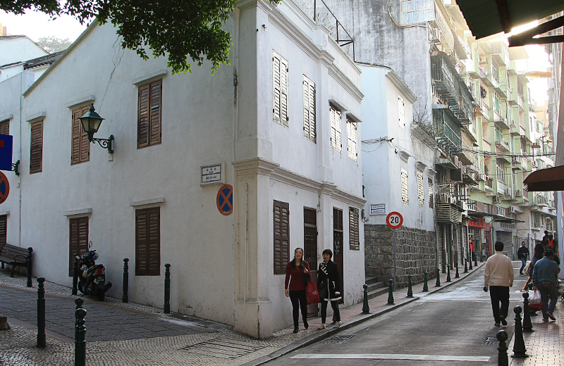
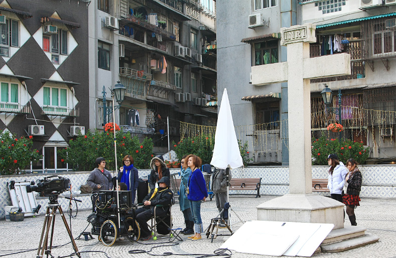
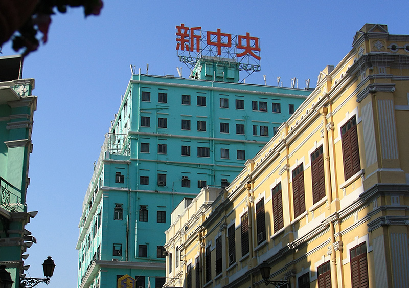
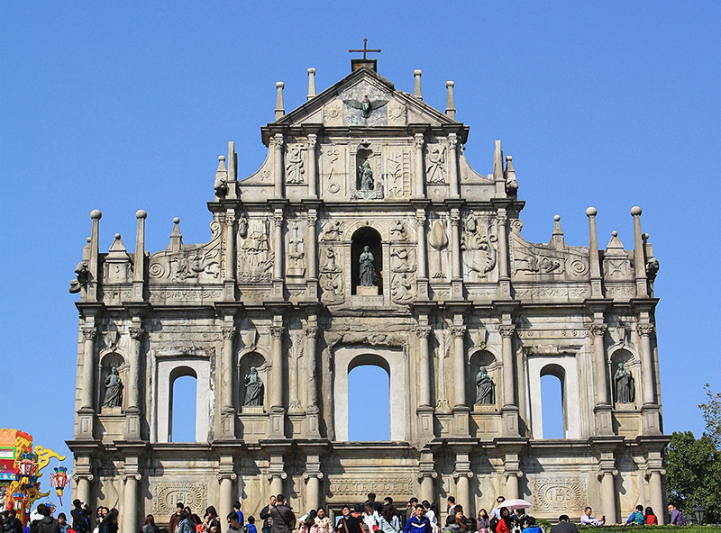
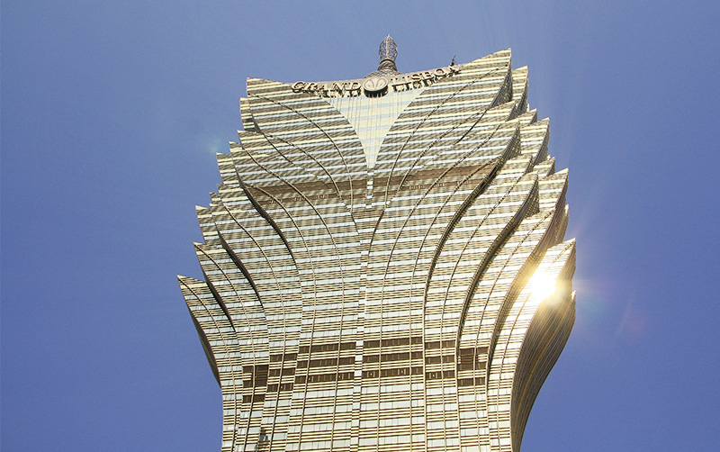

澳门有很多保存完善的历史建筑，多得有些出乎意料。大多颜色都是温和的淡黄，淡粉，淡绿和淡蓝，干净而美好。400多年欧洲文明和本土文明的融合，使得这些建筑即便在周围都是破旧老屋的环境中，也毫不突兀，十分和谐。银河很多电影也都在澳门取景，我们自然也要走走。

亚婆井前地: 亚婆井的葡文意思是「山泉」，传说明朝有一位婆婆在这里修筑水池，储山泉水方便居民饮用，这里以前是澳门主要的水源，是葡人在澳门最早的聚居地之一。在杜琪峰电影《放逐》开篇，火（黄秋生）、肥（林雪）、泰（吴镇宇）和猫（张耀扬）来到亚婆井前地找他们昔日的兄弟和（张家辉）。在这所白色房子里一场枪战后，五人竟开始帮张家辉搬家，吃了顿温馨的晚饭。《放逐》看过很多遍，印象最深的莫过于开篇这段，单是为了四人在亚婆井前地一起回头的那张剧照，也值得专程去澳门寻觅这条小街。

主教座堂: 主教座堂全名圣母圣诞主教座堂，俗称大堂，是天主教澳门教区的主教座堂，昔日澳门总督上任时都习惯到大堂把权杖放到圣母的圣像旁以象徵权力的神圣。电影《复仇》中，Costello在大堂前地伏击其仇人任达华，双方展开激烈的枪战。 我们到的时候刚好又有导演在这拍片，看来这地方真是取景圣地。

新马路: 又称亚美打利庇卢大马路,是澳门本岛的中枢街道，起初只是一条叫大鹏巷的弯曲小路，及至1918年经过移山填海后而开阔成一条连接南湾和内港的马路。自新马路开阔以后，其周边陆续兴建不少楼房，并云集银行和各式各样的店舖，渐渐成为澳门的商业活动中心。《暗花》、《再见阿郎》和《复仇》都在这取景过。

大三巴牌坊: 我想80%的游客来澳门都会来这，还有20%想免俗的也得来这下面的那条步行街免费试吃一堆美味零食。大三巴的「三巴」则来自「圣保禄」的葡文São Paulo。1835年，一场大火烧毁了圣保禄学院及其附属的教堂，仅剩下以花岗岩造成的教堂正面前壁、大部份地基以及教堂前的石阶。大三巴旁边还有一条恋爱巷，和别地的情人路是一样的寓意。

新葡京: 新葡京是除了大三巴之外澳门又一个标志性建筑，可以说是澳门博彩业的旗舰娱乐场，里外都挤满了游客。与旧葡京一样，新葡京的建筑设计也有不少关于风水上的传闻，例如酒店如火炬的外貌有指是要化解对面竞争对手永利澳门的财气、赌台上的网状装饰有指是要客人堕进蛛网插翼难飞等，凡此种种，真是信不信由你。《盲探》也曾在此取景。 澳门有很多教堂，走得我们最后看照片都无法一一对上号了。